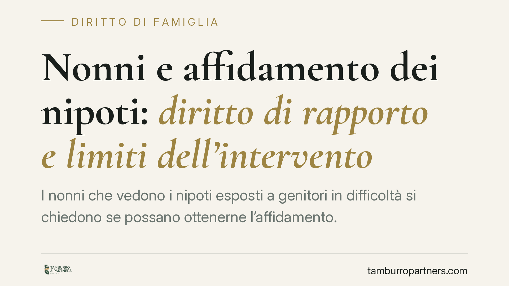

Nonni e affidamento dei nipoti: diritto di rapporto e limiti dell'intervento
I nonni che vedono i nipoti esposti a genitori in difficoltà si chiedono se possano ottenerne l'affidamento. La risposta richiede di distinguere due piani diversi: il diritto dell'ascendente a mantenere rapporti con il minore e la ben più stringente possibilità di sottrarre il figlio ai genitori. Un recente orientamento della giurisprudenza di merito ribadisce che le due questioni non vanno confuse.

Due piani da non confondere
Quando un nucleo familiare entra in crisi, capita che siano i nonni a farsi carico, di fatto, della cura dei nipoti. Da qui la domanda ricorrente: possono gli ascendenti chiedere e ottenere l'affidamento dei minori?
La questione va scomposta in due profili distinti. Il primo è l'intervento dei nonni nel processo che riguarda i nipoti. Il secondo, molto più grave nelle conseguenze, è l'allontanamento dei minori dai genitori e l'eventuale collocazione altrove. Confondere i due piani porta ad aspettative sbagliate.
Il diritto dell'ascendente a mantenere i rapporti
Il primo riferimento è l'art. 317-bis del Codice civile, che riconosce agli ascendenti il diritto di mantenere rapporti significativi con i nipoti minori. Si tratta di un diritto proprio dei nonni, non di un potere di decidere sulla vita del minore: la norma tutela la relazione affettiva e la continuità del legame, nell'interesse del bambino.
Sul piano processuale, l'intervento del terzo nel giudizio è disciplinato in generale dall'art. 105 c.p.c. Chi vuole intervenire deve far valere un diritto proprio, non un generico interesse al benessere dei nipoti. Il nonno, quindi, può entrare nel procedimento solo se fonda la sua richiesta su una posizione giuridica specifica — tipicamente proprio quella dell'art. 317-bis c.c.
Va segnalato che la riforma del processo di famiglia (c.d. riforma Cartabia) ha ridisegnato riti e competenze, confluiti nel nuovo rito unificato in materia di persone, minorenni e famiglie. Resta ferma la distinzione di fondo: un conto è il diritto di visita e di relazione dell'ascendente, altro è la responsabilità genitoriale.
L'affidamento non è automatico
Nessuna norma prevede che, in presenza di genitori in difficoltà, i nipoti vadano affidati ai nonni. L'allontanamento del minore dai genitori passa dagli artt. 330 e 333 c.c., che riguardano rispettivamente la decadenza dalla responsabilità genitoriale e l'adozione di provvedimenti limitativi in caso di condotte pregiudizievoli.
Si tratta di misure eccezionali, ancorate a un presupposto preciso: la condotta del genitore deve essere concretamente dannosa per il figlio. L'inadeguatezza va provata e valutata caso per caso, non presunta.
La giurisprudenza di merito ha chiarito un punto delicato. L'intervento del nonno è legittimo quando ha funzione integrativa del ruolo genitoriale, non quando tende a sostituirsi ai genitori. In altre parole: l'ascendente che si candida a prendere il posto di padre e madre, anziché affiancarli, può vedersi escludere proprio perché quella sostituzione non corrisponde all'interesse del minore.
Ne deriva una conseguenza spesso non intuitiva. Quando entrambi i genitori risultano inadeguati, l'esito non è automaticamente l'affidamento ai nonni: il minore può essere affidato ai Servizi sociali, che assumono la gestione della situazione e monitorano il nucleo. I nonni, in questo scenario, possono conservare e coltivare la relazione con il nipote, ma non per questo ne diventano affidatari.
Cosa cambia per nonni e genitori
Per i nonni: avere cura concreta dei nipoti e un rapporto affettivo intenso non equivale a un titolo per ottenerne l'affidamento. La strada processuale esiste, ma è finalizzata a preservare la relazione, non a surrogare i genitori.
Per i genitori in difficoltà: la pressione dei nonni non si traduce in una perdita automatica dei figli. Allo stesso tempo, condotte concretamente pregiudizievoli espongono a provvedimenti limitativi, fino alla decadenza nei casi più gravi.
Cosa fare in concreto
- Nonni — Prima di agire, individuate con precisione il diritto che intendete far valere (tipicamente la relazione ex art. 317-bis c.c.): l'intervento processuale senza un fondamento giuridico proprio è destinato a essere respinto.
- Nonni — Documentate la natura della relazione con i nipoti (frequentazione, cura, continuità affettiva), evitando di impostare la richiesta come sostituzione dei genitori.
- Genitori — Raccogliete per tempo elementi sulla vostra effettiva capacità di cura: in giudizio la valutazione è concreta, non teorica.
- Tutti — È opportuna una verifica preventiva della posizione processuale e della strategia, data la riforma che ha modificato riti e competenze in materia di famiglia.
- Tutti — In presenza di un provvedimento che coinvolge i Servizi sociali, mantenete un atteggiamento collaborativo: l'interesse del minore è il parametro con cui ogni scelta viene misurata.
Contributo informativo a cura di Tamburro & Partners Avvocati. Non costituisce parere legale.
Ogni famiglia ha il suo equilibrio.
Separazione, divorzio, affidamento, assegno: se vuoi un confronto riservato su una specifica situazione, scrivi allo studio. Ti rispondiamo entro un giorno lavorativo.